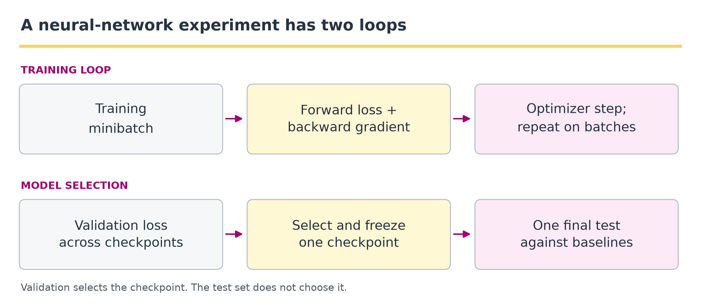
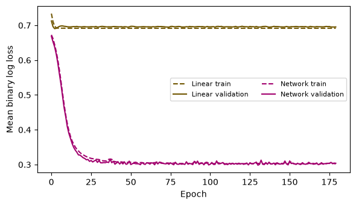

2 · Python and neural network foundations#
Question. What changes when a regression model learns its own nonlinear features?
Download the executed notebook · Python setup
A neural network is a parameterized function fitted by an optimization procedure. Its hidden layers are learned basis expansions. This chapter starts with array operations, connects logistic regression to a small network, and makes the training loop visible. We will compare both models on the same simulated classification problem, using a validation set to select a checkpoint and a separate test set for final evaluation.
Prerequisites: Chapter 1, matrix multiplication, likelihood, and differentiation. Outcomes: read tensor shapes; check a gradient; implement minibatch training; distinguish optimization error from generalization error. All cells run on a CPU using NumPy, Matplotlib, and PyTorch. Run them in order.
Pipeline and framework#

The inner loop updates parameters using training minibatches. The outer selection loop compares checkpoints on validation data. The test set belongs to neither loop. This distinction matters even for the small network below: looking repeatedly at test loss and changing the model would turn that sample into development data.
Step |
Input and output |
What to inspect |
|---|---|---|
Prepare |
Raw observations become tensors and fixed split indices. |
Feature shape, label shape, class proportions, and preprocessing fit only on training data. |
Optimize |
A minibatch and current weights produce loss, gradients, and new weights. |
Clear old gradients; check finite loss and nonzero gradients where expected. |
Select |
Validation losses identify one saved checkpoint. |
Save a copy of the weights; a reference to changing weights is not a checkpoint. |
Evaluate |
Frozen weights and held-out tensors produce predictions and losses. |
Compare the constant predictor, logistic model, and neural network on the same observations. |
The training loop in Section 2.5 implements these steps in the order zero_grad -> forward -> loss -> backward -> step. Evaluation mode and disabled gradient recording serve different purposes: the former changes layers such as dropout; the latter avoids building a gradient graph. Neither substitutes for holding out observations.
2.1 · Arrays, shapes, and broadcasting#
A NumPy array has a shape and a data type. A matrix of \(n\) observations with \(p\) features has shape (n, p). In Python, * multiplies entries; @ performs matrix multiplication. Broadcasting permits operations between compatible shapes by aligning dimensions from the right. A singleton dimension can be repeated without explicitly making copies.
Code
import numpy as np
import matplotlib.pyplot as plt
import torch
from torch import nn
torch.set_num_threads(1)
torch.manual_seed(2026)
rng = np.random.default_rng(2026)
X_demo = np.array([[1., 2.], [3., 4.], [5., 6.]])
w_demo = np.array([0.5, -0.25])
print('X:', X_demo.shape, 'w:', w_demo.shape)
print('Linear predictions:', X_demo @ w_demo)
print('Column centering:', X_demo - X_demo.mean(axis=0))
print('Keep a column dimension:', X_demo[:, :1].shape)
Output
X: (3, 2) w: (2,)
Linear predictions: [0. 0.5 1. ]
Column centering: [[-2. -2.]
[ 0. 0.]
[ 2. 2.]]
Keep a column dimension: (3, 1)
X_demo[:, 0] has shape (3,), whereas X_demo[:, :1] has shape (3, 1). This difference matters: subtracting (n, 1) from (n,) produces an (n, n) array, not the vector of residuals you intended. Before fitting anything, print the shapes of predictors, labels, and predictions. Use assertions when a silent broadcast could change the estimand.
A function packages a calculation with named inputs and a returned result. A class packages state and behavior. PyTorch’s nn.Module is the base class for models; its registered parameters are the quantities an optimizer can update. A tensor resembles an array but can also participate in automatic differentiation.
Example 2.1 · A shape error can produce a plausible number
Setup. Two predicted probabilities are stored as [[0.2], [0.8]], with shape (2, 1). Their labels are [0, 1], with shape (2,).
Work it through. Subtraction broadcasts the labels across both rows and returns [[0.2, -0.8], [0.8, -0.2]], a (2, 2) array. Averaging its squared entries gives \(0.34\). Reshaping the labels to (2, 1) instead gives the intended residuals [[0.2], [-0.2]] and mean square \(0.04\).
What this shows. The incorrect operation runs successfully and returns a finite loss. It compares each prediction with both labels instead of its own label. Check dimensions and observation alignment before trusting a training curve; a falling loss cannot certify that the intended problem was implemented.
2.2 · From logistic regression to learned features#
For binary \(Y\), write
The mean negative log likelihood is
The gradient of Equation (2.1) in \(w\) is \(X^\top(p-y)/n\). A hidden layer replaces the fixed features with \(h(x)=\tanh(W_1x+b_1)\) and uses \(\eta=w_2^\top h(x)+b_2\). Both layers are estimated jointly. The resulting likelihood is familiar; the feature map and nonconvex optimization are the new parts. A deeper model does not remove the need for a sampling model, a baseline, or independent evaluation.
We use BCEWithLogitsLoss, which accepts logits and implements a stable binary cross-entropy. Do not apply a sigmoid before passing predictions to this loss. Apply it when you need probabilities for interpretation.
Forward and backward passes with dimensions#
For a minibatch of \(m\) rows, let \(X\in\mathbb R^{m\times p}\), \(W_1\in\mathbb R^{p\times h}\), \(b_1,w_2\in\mathbb R^h\), and \(b_2\in\mathbb R\). The column-vector formula above becomes
Here \(\pi\in(0,1)^m\) is the vector of predicted probabilities and \(p\) counts input features. Differentiating the forward map in Equation (2.2) with \(\delta=(\pi-y)/m\), the chain rule gives the unregularized minibatch-loss gradients
\(\odot\) multiplies entries, and \(G\) has shape \(m\times h\). The derivative \(1-\tanh^2(A)\) in Equation (2.3) explains how a saturated hidden unit can transmit a small gradient. nn.Linear(p, h) stores the transpose of our \(W_1\), with shape (h, p); its forward calculation still implements this map. In the experiment \(p=2\) and \(h=16\).
Example 2.2 · One gradient step by hand
Setup. Use one observation \(x=2\), \(y=1\), a scalar weight \(w\), and no intercept. Start at \(w=0\), with learning rate \(0.1\).
Work it through. The logit is \(xw=0\) and the probability is \(p=0.5\). Equation (2.1) gives loss \(\log 2\approx0.6931\) and derivative \(x(p-y)=2(-0.5)=-1\). Gradient descent sets \(w_{\mathrm{new}}=0-0.1(-1)=0.1\). The new probability is \(\sigma(0.2)\approx0.5498\), with loss \(\log(1+e^{-0.2})\approx0.5981\).
What this shows. The negative derivative increases the weight, making the observed positive outcome more probable. This tiny calculation provides a known answer for checking automatic differentiation, update signs, and loss reduction before training a larger network.
2.3 · Check automatic differentiation on a known answer#
Autodiff applies the chain rule to a recorded computation graph. It is not numerical differentiation. A finite-difference check is nevertheless useful for catching mistakes in your formula or tensor indexing.
Code
x_check = torch.tensor(X_demo, dtype=torch.float64)
y_check = torch.tensor([0., 1., 1.], dtype=torch.float64)
w = torch.tensor([0.2, -0.1], dtype=torch.float64, requires_grad=True)
loss = nn.functional.binary_cross_entropy_with_logits(x_check @ w, y_check)
loss.backward()
autodiff = w.grad.detach().numpy().copy()
manual = (x_check.T @ (torch.sigmoid(x_check @ w) - y_check) / 3).detach().numpy()
def objective(v):
z = X_demo @ v
return np.mean(np.logaddexp(0, z) - y_check.numpy() * z)
h = 1e-5
base = w.detach().numpy()
finite_difference = np.array([
(objective(base + h * e) - objective(base - h * e)) / (2 * h)
for e in np.eye(2)
])
print('Autodiff:', autodiff)
print('Analytic:', manual)
print('Finite difference:', finite_difference)
assert np.allclose(autodiff, manual, atol=1e-10)
assert np.allclose(autodiff, finite_difference, atol=1e-8)
Output
Autodiff: [-0.95235324 -1.06951268]
Analytic: [-0.95235324 -1.06951268]
Finite difference: [-0.95235324 -1.06951268]
Gradients accumulate in .grad. An optimizer therefore needs zero_grad() before a new backward pass. detach() stops tracking a tensor for differentiation; it does not change its numerical value. Use torch.no_grad() for evaluation to avoid building an unnecessary graph.
2.4 · Simulate a nonlinear problem and split first#
The true log odds below depend on squared radius. A linear decision boundary is misspecified. This is deliberate: we want an example in which nonlinear features have a reason to help, rather than a contest in which model complexity is rewarded without explanation.
Code
X = rng.normal(size=(1200, 2)).astype('float32')
true_logits = 2.5 * (1.5 - (X ** 2).sum(axis=1))
true_p = 1 / (1 + np.exp(-true_logits))
y = rng.binomial(1, true_p).astype('float32')
order = rng.permutation(len(y))
train, valid, test = order[:700], order[700:950], order[950:]
mean = X[train].mean(axis=0)
scale = X[train].std(axis=0)
Z = torch.tensor((X - mean) / scale)
y_tensor = torch.tensor(y)
print('Train / validation / test:', len(train), len(valid), len(test))
print('Training class proportion:', round(float(y[train].mean()), 3))
Output
Train / validation / test: 700 250 250
Training class proportion: 0.491
Estimate preprocessing parameters on training observations only. Validation observations influence model selection, so they are not a final test sample. The simulation’s true probabilities are available for understanding the example; we do not feed them into the optimizer.
2.5 · A training loop you can inspect#
One epoch visits all training observations. A minibatch supplies a noisy gradient estimate. We shuffle the training indices each epoch, evaluate validation loss without gradients, and save the parameters with the lowest validation loss. state_dict() contains model parameters; copying its tensors prevents later training from changing the saved checkpoint.
Code
import copy
def fit(model, epochs=180):
optimizer = torch.optim.Adam(model.parameters(), lr=0.02, weight_decay=1e-3)
loss_fn = nn.BCEWithLogitsLoss()
history, best_loss, best_state = [], float('inf'), None
local_rng = np.random.default_rng(90)
for epoch in range(epochs):
model.train()
for batch in np.array_split(local_rng.permutation(train), 7):
optimizer.zero_grad()
logits = model(Z[batch]).squeeze(-1)
loss = loss_fn(logits, y_tensor[batch])
loss.backward()
optimizer.step()
model.eval()
with torch.no_grad():
train_loss = loss_fn(model(Z[train]).squeeze(-1), y_tensor[train]).item()
valid_loss = loss_fn(model(Z[valid]).squeeze(-1), y_tensor[valid]).item()
history.append((train_loss, valid_loss))
if valid_loss < best_loss:
best_loss = valid_loss
best_state = copy.deepcopy(model.state_dict())
model.load_state_dict(best_state)
return model, np.asarray(history)
linear, linear_curve = fit(nn.Linear(2, 1))
network, network_curve = fit(nn.Sequential(
nn.Linear(2, 16), nn.Tanh(), nn.Linear(16, 1)
))
fig, ax = plt.subplots(figsize=(6, 3.5))
for label, curve, color in [('Linear', linear_curve, '#705600'),
('Network', network_curve, '#a2006e')]:
ax.plot(curve[:, 0], '--', color=color, label=label + ' train')
ax.plot(curve[:, 1], color=color, label=label + ' validation')
ax.set(xlabel='Epoch', ylabel='Mean binary log loss')
ax.legend(ncol=2, fontsize=8)
plt.tight_layout()
plt.show()
Output

The optimizer controls how parameters move, not what the statistical target is. Weight decay penalizes large parameters; hidden-layer width controls representational capacity; the epoch budget controls how long we optimize. These are different choices. A decreasing training loss with a rising validation loss is evidence that further optimization is harming validation performance, not evidence that gradient descent has stopped working.
Optimization and checkpoint selection are different operations#
For a minibatch index set \(\mathcal B_k\), a plain stochastic-gradient step would be
\(\eta_k>0\) is a learning rate. Uniform sampling of a fresh minibatch gives an unbiased gradient of the empirical mean loss conditional on the current weights; successive batches sampled without replacement need not have that conditional property. The code uses Adam, which rescales gradients using running moments, and includes weight decay, so its step() is not exactly this plain update.
For saved epoch checkpoints \(\theta^{(1)},\ldots,\theta^{(E)}\), selection is
The index set \(\mathcal I_{\mathrm{val}}\) is disjoint from training and test indices. Equation (2.4) corresponds to best_loss and the copied best_state, not to backward().
2.6 · Compare with a constant baseline on the test sample#
Code
with torch.no_grad():
baseline = float(y[train].mean())
baseline_loss = -np.mean(y[test] * np.log(baseline)
+ (1-y[test]) * np.log(1-baseline))
print(f'Constant baseline test log loss: {baseline_loss:.3f}')
for name, model in [('Linear', linear), ('Network', network)]:
logits = model(Z[test]).squeeze(-1)
test_loss = nn.functional.binary_cross_entropy_with_logits(logits, y_tensor[test])
accuracy = ((logits > 0) == (y_tensor[test] > 0)).float().mean()
print(f'{name}: test log loss={test_loss:.3f}, accuracy={accuracy:.3f}')
assert torch.isfinite(logits).all()
Output
Constant baseline test log loss: 0.693
Linear: test log loss=0.695, accuracy=0.580
Network: test log loss=0.266, accuracy=0.872
These numbers describe one simulated dataset and one training seed. They are not a general ranking of architectures. To study stability, repeat the entire data-generation and fitting procedure with several independent seeds, preserving the paired comparison within each replicate. Do not search over seeds and report only the favorable run.
2.7 · Debug the experiment before enlarging the model#
Symptom |
First diagnostic |
|---|---|
Loss is |
Check finite inputs, learning rate, and stable loss functions. |
Loss is unchanged |
Check registered parameters, gradients, and |
Suspiciously perfect validation |
Check duplicate observations and preprocessing leakage. |
Accuracy is high but log loss is poor |
Inspect overconfident mistakes and class imbalance. |
Shapes look plausible but loss is strange |
Check for unintended |
A useful development test is to overfit a tiny training subset deliberately. If a flexible network cannot fit a handful of examples, investigate the implementation before collecting more data. This is a debugging experiment, not evidence of generalization.
2.8 · Exercises#
For
n=20, p=3, h=8, list the shapes after both linear layers of a binary network and count its parameters.Derive the logistic-regression gradient and identify the term that corresponds to residuals.
Add the squared radius as a fixed feature to logistic regression. Explain why this is an especially strong baseline here.
Set the learning rate to
0.5and then0.001. Compare optimization behavior using validation curves, without selecting a model using test loss.Explain why fitting the standardization parameters to all observations changes the evaluation procedure even when labels are not used.
2.9 · Worked solutions#
1. For a batch of 20, the hidden representation has shape (20, 8) and the logits have shape (20, 1). The first layer has \(3\cdot8+8=32\) parameters; the second has \(8+1=9\); total 41. Squeezing only the final dimension leaves one logit per observation.
2. Differentiating each loss term with respect to its logit gives \(\sigma(\eta_i)-y_i\). Multiplication by \(x_i\) and averaging gives \(X^\top(p-y)/n\). The feature map’s Jacobian replaces \(x_i\) when differentiating through a hidden layer.
3. The data were generated from a linear function of squared radius. A logistic model with features \((x_1,x_2,x_1^2+x_2^2)\) contains the correct conditional model. It may be more data-efficient than learning the same feature from scratch. Fit it with the same split and compare test performance only after validation decisions are fixed.
4. A large learning rate can oscillate or diverge; a small one can make the fixed epoch budget inadequate. Neither outcome alone identifies the best function class. Record the full curve and selected epoch rather than only the last iterate.
5. The fitted transformation would then depend on the evaluation sample. In deployment, future covariates may not be available jointly. A training-only transformation reproduces that intended information boundary. In this simulation the numerical effect may be small, but the experimental definition is still different.
2.10 · Reading and next step#
The official PyTorch basics provide a complementary guide to tensors, modules, autodiff, and optimization. Our simulated comparison is a separate experiment. Next, Chapter 3 replaces numerical covariates with token IDs and learned vector representations.